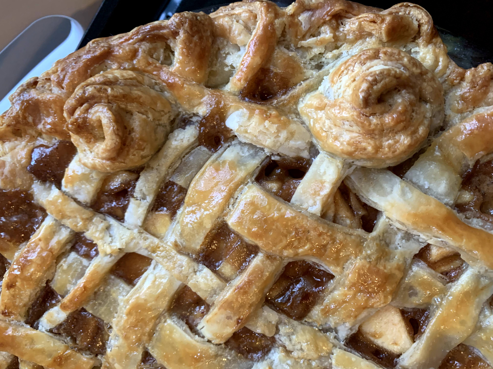

Grace's Apple Pie
by: Grace Gleason

Ingredients
- 2 prepared 9-inch pie crusts
- 8 small to medium apples-- peeled, cored, sliced
- 1/2 cup white sugar
- 1/2 cup packed brown sugar
- 1 tbsp cornstarch
- 1 tsp cinnamon
- 1/2 tsp nutmeg
- 1/2 cup unsalted butter
- 3 tbsp all-purpose flour
- 3 tbsp water
- 1 tbsp vanilla extract
- 1 egg white
Method
- Prepare your crusts ahead of time. Place in the fridge until needed. Peel and cut apples. Place in a large mixing bowl.
- Preheat oven to 350°F. In a different mixing bowl combine all white sugar, brown sugar, cornstarch, cinnamon, and nutmeg.
- In a large saucepan over medium heat, melt the butter. Stir in the flour, creating a paste. Add water, then vanilla while stirring.
- Add remaining dry ingredients. Bring mixture to a boil then reduce heat to low and let simmer until thick and fragrant.
- Pour mixture over the apples and carefully mix.
- Roll out one crust, place in pie plate. Brush the bottom crust with egg whites.
- Pour the apple mixture into the pie crust. Place in fridge.
- Roll out second crust. Cut into lattice if doing a latticed top. Cover the pie with the top crust. If using a full crust, cut four 1-inch slits near the center to allow steam to escape during baking.
- Bake on the lower rack of the oven for 30 mints. Move to the top rack after 30 minutes, but watch the top crust. Add tinfoil if the top crust is getting too brown.
- Bake for a total of 60 minutes and check the apples for desired tenderness. Continue baking in 15-minute increments if not done.
- Let pie cool completely before serving.
Savory Pie
by: Anna Leuning
Eliza's Strawberry Galette
by: Anna Leuning